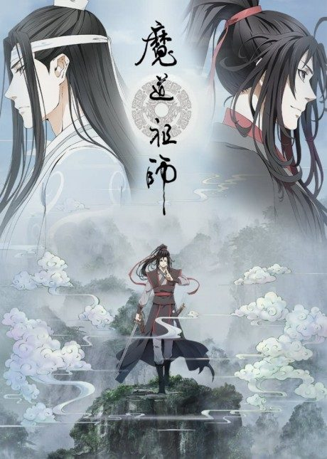

JoJo's Bizarre Adventure
ジョジョの奇妙な冒険 (TV)
The Joestar family's long war against the vampire Dio begins in Victorian England and continues through several generations.
After the anime, read the manga from Steel Ball Run chapter 24.
7.7AniList score
—Animeter, no votes yet
196episodes, 9 seasons
Rate it or report where you stopped
Key events
These are spoilers. They stay blurred until you reveal them, one at a time or all at once.
Phantom Blood Ep 1–9
- Dio uses an ancient Stone Mask to become a vampire.
- Jonathan learns the sunlight-based Ripple technique from Will A. Zeppeli.
- Zeppeli dies fighting Dio's minions.
- Jonathan dies on a burning ship, and Dio survives as a severed head clinging to Jonathan's body.
The Pillar Men Awaken Ep 10–15
- Joseph clashes with a Nazi research team holding the Pillar Man Santana.
- Speedwagon is rescued and Santana is defeated with help from Stroheim.
- Wamuu, Esidisi and Kars awaken in Rome and plant deadly rings inside Joseph.
Hamon Training and Wamuu Ep 16–23
- Joseph defeats Esidisi and wins the antidote to one ring.
- Caesar dies fighting Wamuu after stealing the second antidote.
- Joseph beats Wamuu in a chariot duel, and Wamuu dies with honor.
Kars and the Ultimate Lifeform Ep 24–26
- Kars uses the Red Stone to become a perfect, unstoppable lifeform.
- Lisa Lisa is revealed to be Joseph's mother.
- Joseph launches Kars into space with a volcanic eruption, ending the threat.
Jotaro's Awakening Ep 27–29
- Joseph and Avdol explain that Jotaro's 'spirit' is a Stand.
- Dio has returned from the sea, awakening Stands in the Joestar line.
- Holly falls ill, and the group sets off for Egypt to defeat DIO within fifty days.
Journey to Egypt Ep 30–50
- Polnareff joins after being freed from DIO's flesh bud.
- Polnareff avenges his sister by killing J. Geil.
- Avdol is apparently killed, then revealed alive.
- The group reaches Egypt after battles at sea and in the desert.
Battle in Egypt Ep 51–70
- Iggy the dog joins the fight against N'Doul.
- Jotaro beats D'Arby the Player at a video game duel.
- Vanilla Ice kills Avdol and Iggy before Polnareff destroys him.
DIO's World Ep 71–74
- Kakyoin uncovers the secret of DIO's Stand and dies passing it on.
- DIO kills Joseph and drains his blood.
- Jotaro learns to move in stopped time and defeats DIO, saving Joseph with a transfusion.
Morioh's Stand Users Ep 75–94
- Josuke defeats the serial killer Angelo and seals him in a rock.
- The Nijimura brothers' Bow and Arrow is revealed to be creating new Stand users.
- Koichi, Okuyasu and Rohan become Josuke's friends and allies.
- Shigechi is murdered by a hidden serial killer.
Yoshikage Kira Ep 95–113
- Kira steals another man's identity to escape the heroes.
- Hayato Kawajiri suspects his 'father' is Kira.
- Kira gains Bites the Dust and traps Hayato in a time loop.
- Josuke defeats Kira, who is killed by an ambulance and taken by ghosts.
Joining Passione Ep 114–126
- Giorno earns his place in Bruno Bucciarati's team.
- The team retrieves Polpo's hidden fortune and Bucciarati is promoted.
- The Boss orders them to protect his daughter Trish.
Escorting Trish Ep 127–134
- Prosciutto and Pesci attack the team on an express train.
- Ghiaccio battles Mista and Giorno in Venice.
- Bucciarati learns the Boss intends to kill Trish and betrays him.
Betrayal and the Road to Rome Ep 135–146
- Narancia, Mista and Giorno fight the Boss's elite guard.
- Diavolo's split personality Doppio is shown.
- Polnareff contacts the team and leads them to the Colosseum.
Requiem Ep 147–152
- Chariot Requiem scrambles everyone's souls.
- Narancia is killed by Diavolo.
- Giorno's Gold Experience Requiem traps Diavolo in an endless death loop.
- Giorno becomes the new boss of Passione.
Green Dolphin Street Prison Ep 153–166
- Jolyne awakens her Stand, Stone Free.
- Whitesnake steals Jotaro's Stand and memory discs, leaving him near death.
- Ermes and Foo Fighters become Jolyne's allies.
Ultra Security House Ep 167–176
- F.F. dies after helping Jolyne.
- The chaplain Enrico Pucci is revealed as Whitesnake.
- Jolyne's group, now including Weather Report and Anasui, breaks out of the prison.
Made in Heaven Ep 177–190
- DIO's sons appear and help Pucci.
- Weather Report regains his lost memories as Pucci's brother before Pucci kills him.
- Pucci's Made in Heaven accelerates time to the end of the universe.
- Emporio defeats Pucci in a new universe with no Joestars.
First Stage Ep 191
- Johnny meets Gyro Zeppeli and the Steel Ball's spin.
- Johnny stands again for a moment after touching Gyro's ball.
- The race's first stage ends in a sprint to the finish.
Second Stage onward Ep 192–195
- Johnny and Gyro cross the dangerous Arizona Desert, the 'Devil's Palm'.
- Rivals and Stand users begin to appear along the route.
More like JoJo's Bizarre Adventure
 Manga Ch. 1818.4
Manga Ch. 1818.4
 Manga Ch. 1118.0
Manga Ch. 1118.0
 Done8.1
Done8.1
 Manga Ch. 6617.9
Manga Ch. 6617.9
 Manga Ch. 3408.9
Manga Ch. 3408.9
 Manga Ch. 1357.3
Manga Ch. 1357.3
 Done8.0
Done8.0
 Manga Ch. 2707.9
Manga Ch. 2707.9
 Manga Ch. 2837.7
Manga Ch. 2837.7
 Manga Ch. 577.6
Manga Ch. 577.6
 Done7.7
Done7.7

Original8.2